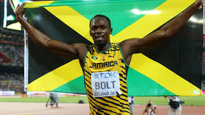

My favourite athlete is Usain Bolt.He is a Jamaican sprinter. Regarded as the fastest person ever, he is the first man to hold both the 100 metres and 200 metres world records since fully automatic time measurements became mandatory in 1977. Along with his teammates, he also set the world Field Athlete of the Year, and Laureus World Sportsman of the Year.He is the highest paid athlete ever in track and field.By winning three gold medals at the 2015 World Championships, Bolt became the first athlete to complete a "triple triple", and also became the most successful athlete in the 32-year history of the athletics world championships.More info
An eight-time Olympic gold medalist, Bolt won the 100 m, 200 m and 4 × 100 m relay at three consecutive Olympic Gamesnces. He100 m and 200 m titles at three consecutive olympics (2008, 2012 and 2016), a feat referred to as the 'triple double'.
An eleven-time World Champion, he won consecutive World Championship 100 m, 200 m and 4 × 100 metres relay gold medals from 2009 to 2015, with the exception of a 100 m false start in 2011. He is the most successful athlete of the World Championships and was the first athlete to win three titles in both the 100 m and 200 m at the competition.
this is left aligned
this is centre aligned
this is right aligned
The following word uses a strikethrough typeface
The following word uses a superscript typeface.
I want to drink cola wine
The following word uses a big typeface.
The following word uses a small typeface.
The following word uses a emphasized typeface.
Amit is in Spain, I think I am wrong
.